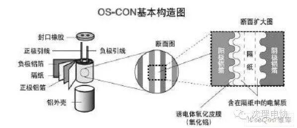

使用小程序

在以后的社团活动中，我们会做一些电子小玩意儿，其中电解电容是必不可少的，下面小编给介绍一下电解电容的作用。
1，滤波作用，在电源电路中，整流电路将交流变成脉动的直流，而在整流电路之 后接入一个较大容量的电解电容，利用其充放电特性（储能作用），使整流后的脉动直流电压变成相对比较稳定的直流电压。在实际中，为了防止电路各部分供电电 压因负载变化而产生变化，所以在电源的输出端及负载的电源输入端一般接有数十至数百微法的电解电容．由于大容量的电解电容一般具有一定的电感，对高频及脉 冲干扰信号不能有效地滤除，故在其两端并联了一只容量为0.001--0.lpF的电容，以滤除高频及脉冲干扰．
2，耦合作用：在低频信号的传递与放大过程中，为防止前后两级电路的静态工作点相互影响，常采用电容藕合．为了防止信号中韵低频分量损失过大，一般总采用容量较大的电解电容。
接下来还要了解一下电解电容的判断方法
电解电容常见的故障有，容量减少，容量消失、击穿短路及漏电，其中容量变化是因电解电容在使用或放置过程中其内部的电解液逐渐干涸引起，而击穿与漏电一般为 所加的电压过高或本身质量不佳引起。判断电源电容的好坏一般采用万用表的电阻档进行测量．具体方法为：将电容两管脚短路进行放电，用万用表的黑表笔接电解 电容的正极。红表笔接负极(对指针式万用表，用数字式万用表测量时表笔互调)，正常时表针应先向电阻小的方向摆动，然后逐渐返回直至无穷大处。表针的摆动 幅度越大或返回的速度越慢，说明电容的容量越大，反之则说明电容的容量越小．如表针指在中间某处不再变化，说明此电容漏电，如电阻指示值很小或为零，则表 明此电容已击穿短路．因万用表使用的电池电压一般很低，所以在测量低耐压的电容时比较准确，而当电容的耐压较高时，打时尽管测量正常，但加上高压时则有可 能发生漏电或击穿现象．
更需要了解电解电容的使用注意事项 ：
1、电解电容由于有正负极性，因此在电路中使用时不能颠倒联接。在电源电路中，输出正电压时电解电容的正极接电源输出端，
负极接地，输出负电压时则负极接输出端，正极接地．当电源电路中的滤波电容极性接反时，因电容的滤波作用大大降低，
一方面引起电源输出电压波动，另一方面又因反向通电使此时相当于一个电阻的电解电容发热．当反向电压超过某值时，电容
的反向漏电电阻将变得很小，这样通电工作不久，即可使电容因过热而炸裂损坏．
2．加在电解电容两端的电压不能超过其允许工作电压，在设计实际电路时应根据具体情况留有一定的余量，在设计稳压电源的
滤波电容时，如果交流电源电压为220~时变压器次级的整流电压可达22V，此时选择耐压为25V的电解电容一般可以满足要求．
但是，假如交流电源电压波动很大且有可能上升到250V以上时，最好选择耐压30V以上的电解电容。
3，电解电容在电路中不应靠近大功率发热元件，以防因受热而使电解液加速干涸．
4、对于有正负极性的信号的滤波，可采取两个电解电容同极性串联的方法，当作一个无极性的电容。
5.电容器外壳、辅助引出端子与正、负极 以及电路板间必须完全隔离。
关注沈理电协（微信：sylgdzxh）
每一次转发和分享都是对我们的肯定。